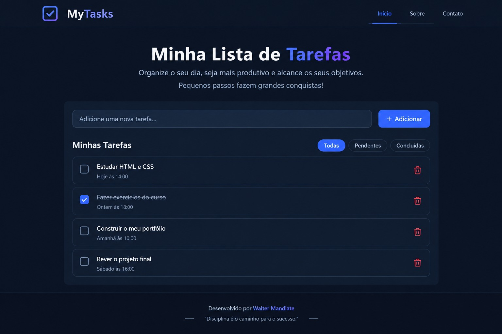
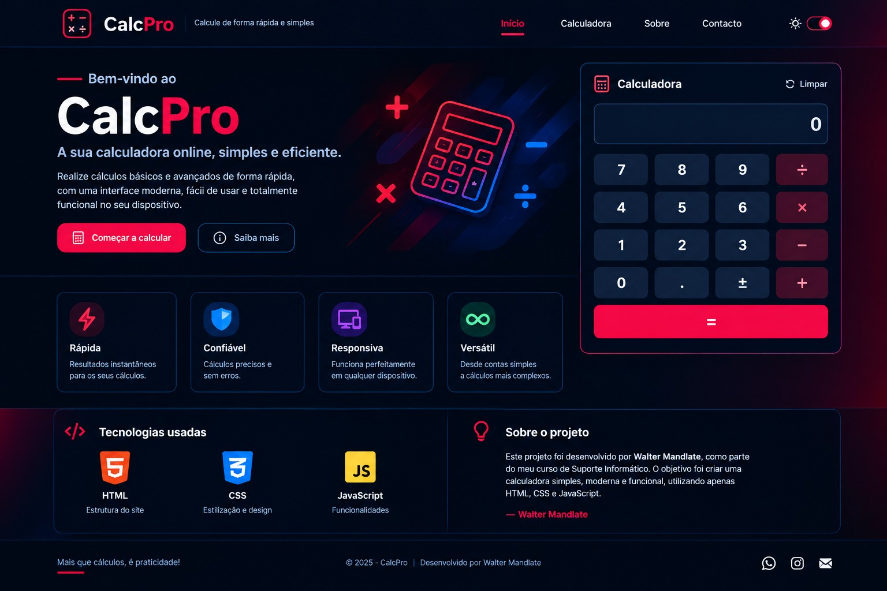
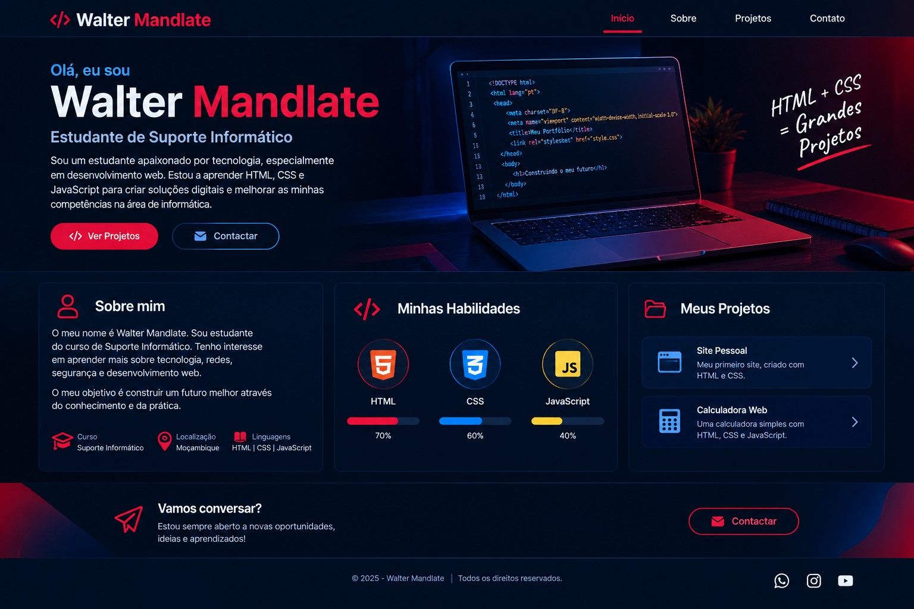

Lista de Tarefas
Exemplo de projeto de organização de tarefas e atividades.
OLÁ, EU SOU
Este é o meu portfólio, onde apresento um pouco sobre mim, as minhas habilidades e alguns trabalhos de aprendizagem.
Ver ProjetosSou estudante do curso de Suporte Informático e tenho interesse por computadores, redes, segurança informática e desenvolvimento Web.
Estou ainda a aprender e procuro melhorar os meus conhecimentos através de aulas, exercícios e pequenos projetos práticos.
Conhecimentos básicos
Manutenção básica
Conhecimentos básicos
Nível iniciante
Noções básicas

Exemplo de projeto de organização de tarefas e atividades.

Exemplo de uma calculadora com uma interface simples.

Exemplo de apresentação pessoal usando tecnologias Web.
Email: waltermandlate20@gmail.com
Telefone: 842184347
Facebook: Vlayd Slayter
Instagram: Vlayd Slayter
GitHub: WalterMandlate